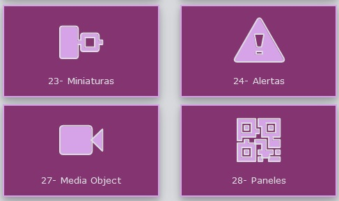
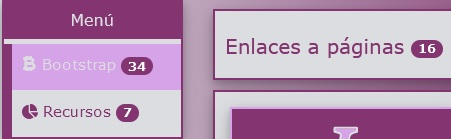
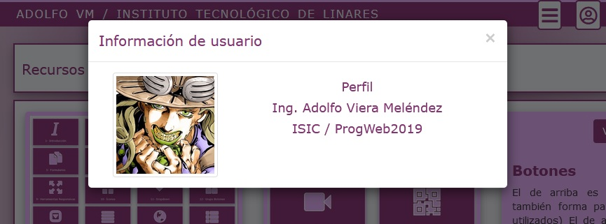
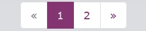
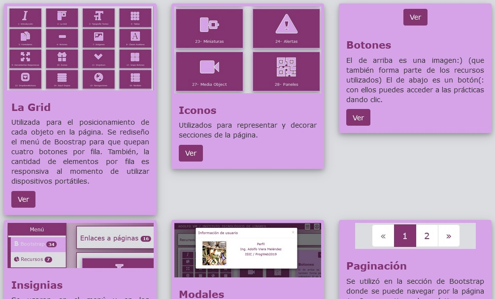

Utilizada para el posicionamiento de cada objeto en la página. Se rediseño el menú de Boostrap para que quepan cuatro botones por fila. También, la cantidad de elementos por fila es responsiva al momento de utilizar dispositivos portátiles.

Iconos
Utilizados para representar y decorar secciones de la página.
Botones
El de arriba es una imagen:) (que también forma parte de los recursos utilizados) El de abajo es un botón(: con ellos puedes acceder a las prácticas dando clic.

Insignias
Se usaron en el menú y en los encabezados para indicar cuantos elementos existen en dichas secciones de la página.

Modales
Al presionar el icono de usuario se abre una ventana emergente donde aparece la foto del usuario y sus datos.

Paginación
Se utilizó en la sección de Bootstrap donde se puede navegar por la página 1 y 2 que contienen las prácticas.

Miniaturas
La sección de Recursos (donde actualmente nos encontramos) fue diseñada con este recurso que hace que cada caja tome su forma.